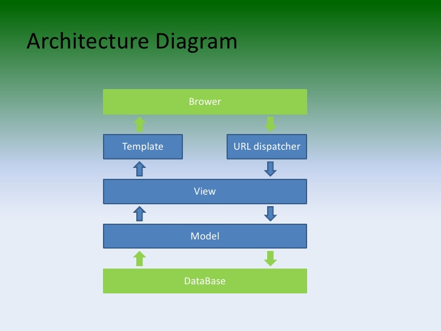
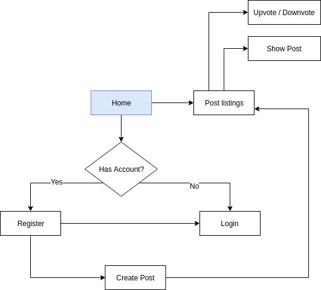

Django Milestones
Framework Overview
Description
“Django is a free and open-source web framework, written in Python, which follows the model-view-template (MVT) architectural pattern. It is maintained by the Django Software Foundation.
Primary Goal
Is to ease the creation of complex, database-driven websites. Django emphasizes reusability and "pluggability" of components, less code, low coupling, rapid development, and the principle of don't repeat yourself (DRY). Python is used throughout, even for settings files and data models. Django also provides an optional administrative create, read, update and delete interface that is generated dynamically through introspection and configured via admin models.
Main Features
- Scalable
- Fast
- Security is a priority
- Built-in administration portal
- Big companies using it: Youtube, NASA, Instagram, etc.
Features
Components
Components Despite having its own nomenclature, such as naming the callable objects generating the HTTP responses "views", the core Django framework can be seen as an MVC architecture. It consists of an object-relational mapper (ORM) that mediates between data models (defined as Python classes) and a relational database ("Model"), a system for processing HTTP requests with a web templating system ("View"), and a regular-expression-based URL dispatcher ("Controller"). Also included in the core framework are:
- a lightweight and standalone web server for development and testing a form serialization and validation system that can translate between HTML forms and values suitable for storage in the database
- a template system that utilizes the concept of inheritance borrowed from object-oriented programming
- a caching framework that can use any of several cache methods
- support for middleware classes that can intervene at various stages of request processing and carry out custom functions
- an internal dispatcher system that allows components of an application to communicate events to each other via pre-defined signals
- an internationalization system, including translations of Django's own components into a variety of languages
- a serialization system that can produce and read XML and/or JSON representations of Django model instances
- a system for extending the capabilities of the template engine
- an interface to Python's built-in unit test framework
Architecture
Conclusions
From my personal perspective learning Python is a efficient way of allocating our most precious resource: Time. It can be applied not only on web but on many contexts like AI, research, data-mining, IOT, etc. It also has a simpler and clearer syntax - compared to another programming languagues such as Java - which makes the learning process much more enjoyable. Django is also a "good shot" in that perspective. Its scalable, fast, reliable (from a security standpoint) and it follows a MVC pattern, being a guide to maintain our code consistency.
Repository
Milestones
| Source | Date | % | Completed |
|---|---|---|---|
| Udemy | 20/09/18 | 30% | Yes |
| Udemy | 27/09/18 | 60% | Yes |
| Udemy | 04/10/18 | 80% | Yes |
| Udemy | 11/10/18 | 100% | No |
Prototype Idea
For applying all Django concepts learned through this self-directed study path I'll create a Reddit clone, that exemplifies all CRUD actions in a simple way.
The user will be able to use an authentication system to login or register a new account. He could also see the list of recent posts and create a new one. Downvote and Upvote actions will be done through AJAX calls to Django, which will handle the communication with the client by using JSON data structures
